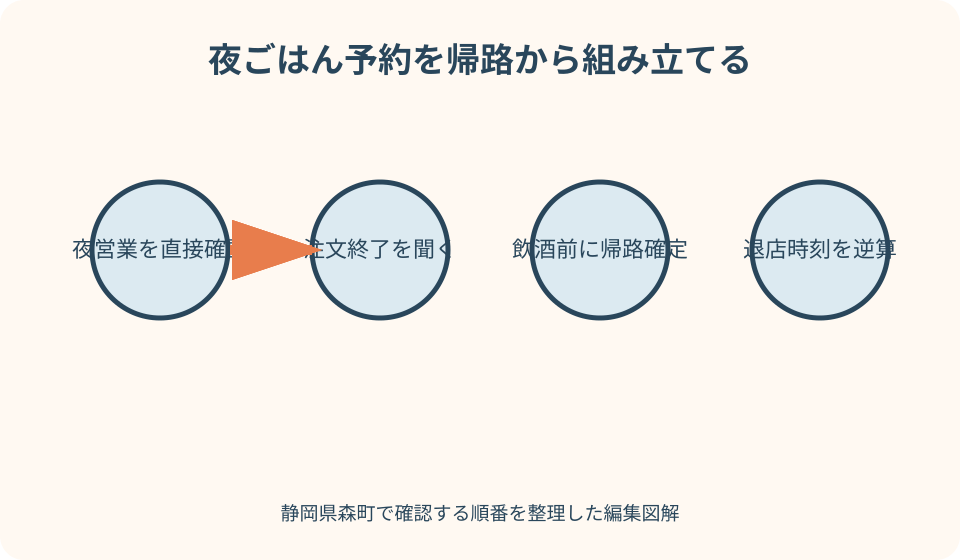
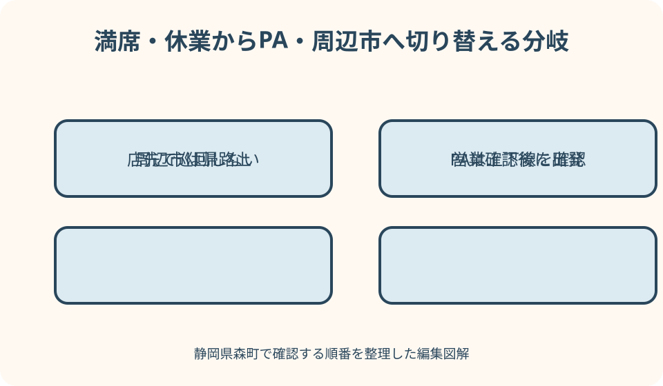

森町グルメ・夜ごはん｜最終確認 2026-08-10
静岡県森町の夜ごはん・ディナー｜予約と帰り方から選ぶ店探し
森町観光協会には魚伊やさゝ川などの飲食店情報がありますが、観光施設やカフェの昼営業をそのまま夜ごはん候補へ移すことはできません。夜は営業日、最終入店、料理の注文終了、予約、売切れに加え、食後の運転、鉄道・バス、タクシーや運転代行の手配までが一つの計画です。本記事は店を順位付けせず、観光協会の掲載を候補探しの入口にし、最終確認は店舗へ行います。森町内が難しい日は、空腹のまま店を探し回らず、PAの当事者公式や袋井・掛川・磐田方面の確実な営業先へ、飲食前に切り替えます。

夜ごはんは昼の店一覧から自動で選ばない
森町でランチを提供する店が、同じ曜日の夜にも営業するとは限りません。昼夜の間に休憩がある、夜は予約だけ、宴会だけ、仕込みで休む場合があります。観光案内の昼情報を根拠に直接向かわないことが第一です。
検索結果に「営業中」と出ても、料理の注文を受けられる状態とは限りません。店舗の公式発信があれば確認し、重要な夕食なら電話で当日の夜営業、入店可能時刻、料理の注文終了を尋ねます。
日曜営業、祝日営業、定休日翌日の扱いも個別に確認します。年末年始、祭り、法事、団体予約がある日は通常と異なる可能性があります。過去の口コミの日付を見ずに現在の営業へ置き換えません。
夕食の目的を、日常の一食、家族の会食、酒を伴う集まり、観光帰りの短い食事に分けます。同じ店でも必要な席、滞在、予算、帰路が変わるため、用途を予約時に伝えます。
本記事は筆者が各店を夜に実食して比べた体験談ではありません。2026年8月10日に確認した森町、観光協会、NEXCO中日本などの公式情報を基に、予約と安全確認の手順をまとめています。
候補は魚伊・さゝ川などの掲載から電話へ進む
森町観光協会は魚伊について、季節料理、宴会、仕出し、昼のランチに加え、夜の部を掲載し、電話予約を勧めています。これは候補を知る手掛かりで、希望日の席や料理を確保する保証ではありません。
さゝ川については、観光協会が夜のみ営業する日本料理店として紹介し、和食や洋食の掲載があります。季節食材の紹介もありますが、訪問日に同じ品があるとは考えず、希望があれば予約時に尋ねます。
両店とも観光協会ページに電話番号、所在地、駐車場、営業時間が掲載されています。ただし更新後の変更や臨時休業があり得ます。予約日、人数、到着予定、席、料理、駐車を店へ直接確かめます。
候補を二店以上比較する時も、一斉に席を仮押さえしません。家族と第一候補を決めて問い合わせ、条件が合わなければ断ったうえで次へ進みます。複数予約の放置は避けます。
店名の知名度や掲載文の華やかさではなく、今夜の人数を受けられるか、帰路を確保できるか、必要な材料確認ができるかで決めます。確認できない事項を料理への期待で埋めません。
予約時は開始より終了条件を詳しく聞く
電話では、予約できる時刻だけでなく、遅れた時の扱い、最終入店、料理と飲み物の注文終了、閉店までに退店できる目安を尋ねます。終了時刻は予約日にも同じか確認します。
コース料理なら、内容、品数、所要、追加注文、キャンセル、人数変更の期限を聞きます。価格を本記事で固定せず、税、サービス料、子ども料理、飲み物を含む総額の考え方を店へ確認します。
席だけの予約では、全メニューが残っているとは限りません。希望する魚料理、うなぎ、季節品などが外せない場合、予約時に提供可否や事前注文が必要かを尋ねます。
電話がつながらない時は、営業していないとも満席とも断定しません。営業時間外の可能性を確認し、指定の問い合わせ方法がなければ時間を変えて一度連絡します。出発直前まで返答がなければ代案へ切り替えます。
到着が遅れそうなら、運転しながら電話せず、安全な場所へ停車して連絡します。店が受入れ困難なら急いで向かわず予約を相談し、帰路上の別候補を選びます。
夜の移動は帰宅手段を予約より先に決める
森町公式は天竜浜名湖鉄道、民間路線バス、町営バス、タクシーなど公共交通の入口を案内しています。ただし、昼の観光移動に使える便が夕食後にもあるとは限りません。帰りを先に確認します。
鉄道やバスを使う人は、最寄り駅・停留所までの夜道、店を出る締切、乗換え、最終便を運行元の最新時刻表で確かめます。本記事へ時刻を転載せず、出発日に再確認します。
タクシーは、町内にいるからすぐ拾えるとは考えません。希望日の配車、迎車場所、人数、チャイルドシートに関する扱い、支払方法を事業者へ事前に問い合わせます。予約できない場合の帰路も決めます。
徒歩では、昼に歩けた距離でも街灯、歩道、雨、荷物、飲酒で条件が変わります。暗い農道や車道を近道にせず、店が案内できる安全な経路を確認します。反射材や灯りも準備します。
帰る方法が決まらないなら、予約を先へ進めません。運転者が飲まない車利用、早い時間の食事、宿泊を伴う別計画、周辺市の駅近くへ変更するなど、食事場所より移動を優先します。
飲酒するなら車を店へ持ち込まない計画にする
運転する人は酒を飲みません。少量、食事と一緒、時間を空けたなどを運転可の根拠にせず、アルコールを含む可能性がある料理や飲み物は店へ確認します。
飲酒予定なら、最初から送迎、タクシー、運転代行、公共交通のどれを使うか決めます。車で到着してから代行を探す方法は、繁忙日や深夜に手配できない危険があります。
運転代行へは、対応地域、受付時間、待ち時間の目安、料金の考え方、車種、現金以外の支払、店の駐車場へ入れるかを事前に尋ねます。店にも代行車の待機位置を確認します。
代行やタクシーが来ない場合、車内で短く休めば運転できるとは考えません。車を適法に置けるか店へ相談し、別の帰宅手段または宿泊を確保します。無断で翌日まで駐車しません。
グループ内の一人を当日に運転役へ変える場合、その人がすでに飲酒していないことを確認します。空気を読んで引き受けさせず、食事開始前に運転者を明確にします。

子連れは席・量・退店時刻を予約時に伝える
子ども連れは、人数だけでなく年齢、ベビーカー、子ども椅子、座敷の希望を伝えます。座敷なら安全、個室なら騒いでもよいとは限りません。段差、靴、席の設備を確認します。
子ども料理は、量、辛さ、骨、熱さ、提供順を尋ねます。大人料理を分けられると決めず、取分け皿や持参食の扱いを店へ確認します。食べ切れない量を人数分先に頼みません。
乳児がいる場合、おむつ交換、授乳、ミルク用の湯を利用できるとは仮定しません。必要な設備と利用時間を聞き、なければ短時間の食事にするか別候補へ変えます。
夜は子どもの眠気が早く来ます。料理の提供順を相談し、開始時刻を遅くしすぎず、退店目標を家族で共有します。子どもが疲れたらデザートや追加料理を取り消せるか早めに相談します。
店内で走る、通路へベビーカーを広げる、大声を放置することを個室で解決しません。大人が交代で見守り、落ち着けない場合は持帰り可否を尋ねるか会計して退店します。
アレルギーは料理名でなく材料と共用工程を確認する
和食、刺身、うなぎ、天ぷらという料理名だけでは、たれ、衣、出汁、薬味、付け合わせの材料を判断できません。対象のアレルゲンと症状の程度を予約時に具体的に伝えます。
除去できるかだけでなく、同じ油、網、包丁、まな板、盛付け場所を使うかを尋ねます。重い症状の可能性がある人は主治医の指示を基準にし、店が安全を保証できない時は利用しません。
季節料理は仕入れで内容が変わることがあります。予約時に確認しても、当日の料理提供前に再度名前を伝えます。取り分けや席での交換による混入も家族で防ぎます。
子ども本人にも、他人の皿を食べない、確認前の付け合わせに触れないことを年齢に合う言葉で伝えます。薬と緊急連絡先は車ではなく、保護者がすぐ使える場所へ持ちます。
対応可否が曖昧なら、空腹や記念日を理由に押し切りません。表示を確認できる別の料理、持参食が許可される場所、周辺市の対応可能店へ変更します。
売切れ・満席・臨時休業の代案を出発前に三段階で持つ
第一候補が満席なら、待てば必ず入れるかを尋ね、帰路に間に合わなければ待ちません。同じ森町内の予約可能店、PA、周辺市の帰路上という三段階で代案を準備します。
希望料理が売り切れた場合、別料理を急いで決めず、アレルギー、量、提供時間を改めて確認します。目当ての品がないことを理由に注文数を増やしません。
臨時休業を店先で知ったら、暗い道で検索を続けず、安全な駐車場所または駅へ移動します。運転者以外が公式情報を確認し、次の目的地を一つに決めてから走り出します。
町内の夜営業を確認できない場合は、袋井、掛川、磐田など帰路に合う周辺市の店へ変更します。市境を越える距離だけでなく、閉店、駐車、最終便を確認し、遠回りしすぎません。
代案も難しい日は、持帰り可能な食品や安全に購入できる食事で済ませ、翌日に改めます。記念日なら店の都合と家族の予定を合わせ直し、当日中の会食に固執しません。
遠州森町PAは上下線とぷらっとパークを分けて確認する
遠州森町PAは上りと下りで店舗が異なります。NEXCO中日本の当事者公式で方向、店舗、営業時間、ぷらっとパークの開閉を確認し、反対側の料理や時間を自分の側へ流用しません。
一般道から利用する場合、ぷらっとパークがあることと、いつでも入れることを同じにしません。駐車台数と開閉時間は上下線の公式ページで訪問日に確認し、閉門間際の夕食に使わないよう余白を取ります。
高速道路走行中なら、スマートICで一度出入りすれば簡単に反対側へ行けると考えません。交通ルール、料金、経路を公式検索で確認し、食事だけを目的に危険な転回をしません。
フードコートの営業時間内でも、全メニューが終了時刻まで残るとは限りません。現地の売切れ表示と注文受付を確認し、夜遅い時は提供できる料理からアレルゲンと量を選びます。
PAを代案にする価値は、帰路と食事を同じ場所で確認できる場合にあります。町内店との優劣ではなく、自分の進行方向、運転者の休憩、家族の空腹に合うかで判断します。
夜道・駐車・会計を退店前に整える
店の駐車場は台数だけで判断せず、入口の幅、裏手への経路、他車との入替えを予約時に聞きます。さゝ川のように商店街から狭い小道へ入ると紹介される店では、現地案内を優先します。
駐車場所が満車なら路上や近隣店舗へ無断で停めません。店へ代替場所を尋ね、案内できない場合は別の交通手段または店へ変更します。飲酒後に車を移動させないことも徹底します。
会計方法は注文前に確認し、現金、カード、分割会計の可否を決めつけません。宴会幹事は総額と支払担当を食事中に整理し、閉店直前に参加者から集金し始めないようにします。
退店前には、代行またはタクシーの到着、帰りの列車、子どもの荷物、アレルギー薬、傘、駐車券を確認します。店外で長く待つ場合の場所も店へ聞きます。
夜の写真撮影や散策を食後に追加せず、明るく安全な経路で帰ります。祭りや紅葉の時期でも、暗い寺社や川辺へ無断で入らず、観光は昼へ分けます。

良い点：予約すれば目的に合う夜の候補を絞れる
森町観光協会に夜営業を明記する店の掲載があることは、昼の一覧から推測せず候補を探せる良い点です。魚伊は夜の部と予約推奨、さゝ川は夜のみという違いを入口で把握できます。
季節料理、家族利用、宴会など異なる用途の情報があるため、日常の夕食と会食を分けて相談できます。掲載内容のまま利用できるとは限らず、電話確認を行うことが条件です。
森町公式には公共交通の情報入口があり、NEXCO中日本にはPAの当事者情報があります。町内店が難しい時に、帰路を基準に別の食事場所を検討する資料がそろいます。
町の規模が小さいからこそ、予約時に人数、子ども、料理、帰りを具体的に伝える意味があります。店側が対応できない条件も早く分かり、現地で無理な要求をせずに済みます。
夜ごはんを観光の延長ではなく一つの予定にすれば、昼の訪問先を詰め込まずに済みます。夕食前に休憩し、運転や子どもの体調を整えてから店へ向かえます。
注文したい点：夜営業と帰路情報を更新日付きで結びたい
観光の飲食一覧に、昼のみ、夜あり、夜のみ、予約中心を分ける絞込みがあると便利です。営業時間を保証するのではなく、更新日と店舗へ最終確認する連絡先を分かりやすく示したいところです。
店ごとに、最終入店、料理の注文終了、子ども席、アレルギー相談、駐車、タクシー乗降場所の確認項目がそろうと、夜の誤解を減らせます。不明は空欄でなく要問い合わせと表示できます。
公共交通案内から、夜の鉄道・バス時刻、タクシー事業者、運転代行の確認方法へ進めると、飲酒運転防止にも役立ちます。配車や営業を行政が保証しないことも併記します。
催しや年末年始は、臨時営業と休業が同時に起こります。観光協会のお知らせと店の発信を日付で結び、古い営業時間が検索結果に残る場合の注意を掲載できると安心です。
PAの上下線とぷらっとパークも、一般道利用か高速利用かを選んで店舗情報へ進める導線が重要です。上下線の料理や開閉時間を混同しない地図表示が望まれます。
代案・結論：予約・食事・帰路を一枚にまとめる
前日までに、第一候補へ夜営業、予約、終了条件、席、料理、アレルゲン、駐車を確認します。同時に、誰が運転するか、飲酒するか、帰る時刻、代行やタクシーの手配を決めます。
当日は、出発前に臨時休業がないか再確認します。到着後は駐車位置と退店経路を見て、注文前に売切れと会計方法を確かめます。条件が変われば早い段階で店と相談します。
満席や休業なら、同じ町内の第二候補へ電話し、難しければ進行方向に合うPAまたは周辺市へ変えます。複数の店を車で巡回せず、営業を確認した一か所だけへ向かいます。
飲酒する場合は、車を運転しない帰路が確定してから注文します。代行やタクシーが不確実なら飲まず、公共交通の最終に間に合わなければ食事時間を早めるか店を変更します。
結論は、森町の夜ごはんを昼の延長で探さないことです。予約、注文終了、食事条件、帰路を一組で確認し、情報不足なら周辺市を含む安全な代案へ早く切り替えます。
大石の視点：家族の会食は帰宅までを記録する
私（大石）は、夜の会食では料理の評判より、参加者全員が無理なく帰れるかを先に見ます。運転者だけが飲めずに段取りまで抱える集まりにせず、予約、送迎、会計を分担します。
家族の記録には、利用日、店へ確認した営業と予約条件、駐車、座席、アレルギー対応、代行・タクシーの連絡先、最寄り駅を残します。次回も同じとは限らないため再確認日も設けます。
法事やお食い初めなど家族行事では、料理だけでなく高齢者の段差、乳児の休憩、送迎、終了時刻を一緒に相談します。全員参加に固執せず、昼開催や仕出しが可能か店へ尋ねる代案もあります。
空き家や実家を訪ねた後の夕食なら、暗くなる前に戸締り、道路、家族の車を確認します。作業が長引いて予約へ遅れそうな時は、無理な運転で急がず店へ連絡し、食事を簡素にします。
この記事の確認日は2026年8月10日です。店舗の営業、価格、料理、交通、PA、配車は変更される場合があります。利用日には店舗と運行事業者の案内を再確認し、帰れない可能性が残るなら飲酒せず、早い時間の食事へ変えてください。
公式情報・確認先
掲載内容は次の一次情報を基礎に整理しました。営業、料金、催し、交通は変わるため、出発前または手続き前にリンク先で最新情報を確認してください。
- 観光（静岡県森町、2026-08-10確認）
- 森町の公共交通について（静岡県森町、2026-08-10確認）
- 観光パンフレット（静岡県森町、2026-08-10確認）
- 魚伊（森町観光協会、2026-08-10確認）
- さゝ川（森町観光協会、2026-08-10確認）
- 遠州森町PA 上り 施設・サービス案内（NEXCO中日本、2026-08-10確認）
- 遠州森町PA 下り 施設・サービス案内（NEXCO中日本、2026-08-10確認）